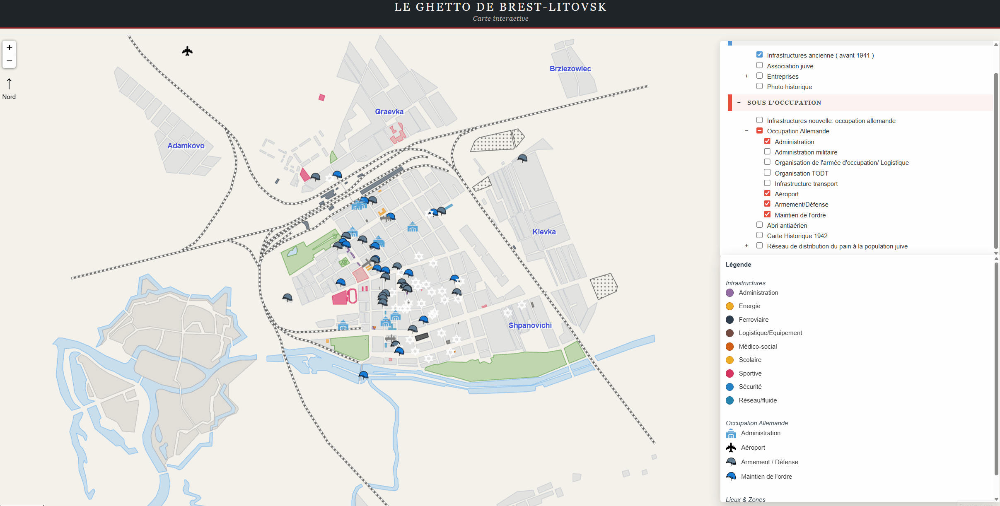
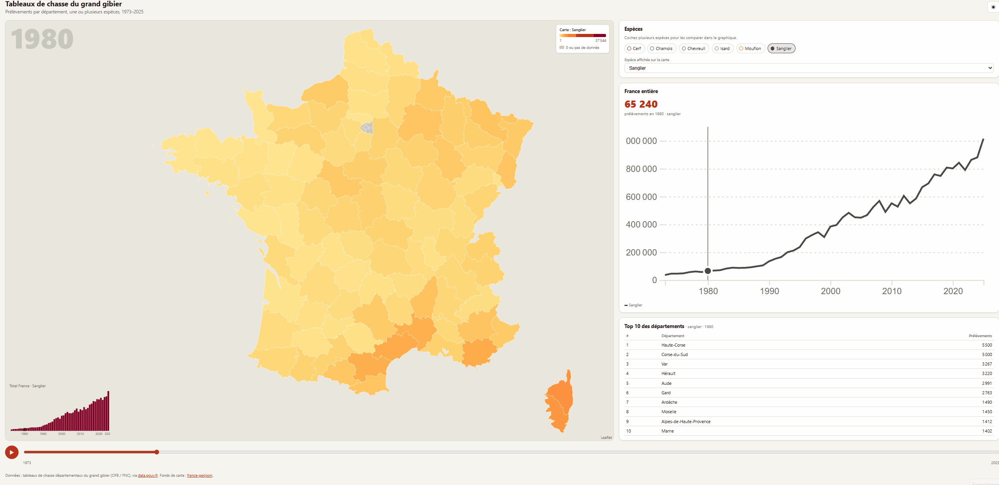
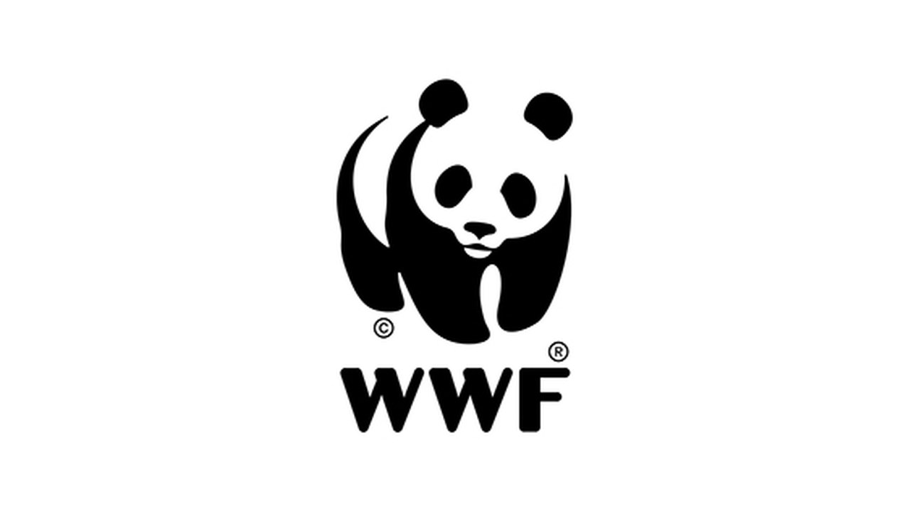

Cartographie du ghetto de Brest-Litovsk
Réalisation pour l'université de Caen, projet interdisciplinaire à l'objectif mémoriel et pédagogique visant à reconstituer la ville de Brest-Litovsk et sa population juive en 1942.
> Bonjour, je suis
Je suis |
Ingénieur généraliste spécialisé en géomatique, je mets les données spatiales au service de la gestion environnementale, de la biodiversité et de la conservation.
Diplômé de l'ISEN Brest (ingénieur généraliste, master spécialisé Numérique & Développement durable), j'ai construit un profil à la croisée du numérique et de l'environnement : géomatique, développement web, analyse de données et gestion de projet.
Mon parcours m'a mené d'Enedis à Erevan, où j'ai travaillé avec le WWF Arménie sur le suivi du lynx eurasiatique, puis à l'Université de Caen où je gère aujourd'hui les données spatiales d'un projet de recherche interdisciplinaire.
Hors du bureau : zoologie et naturalisme, plongée sous-marine (PE-20), pilotage de drone et voyages en autonomie.

Réalisation pour l'université de Caen, projet interdisciplinaire à l'objectif mémoriel et pédagogique visant à reconstituer la ville de Brest-Litovsk et sa population juive en 1942.

Projet personnel. Mise en valeur des données de l'OFB/FNC sur l'évolution des tableaux de chasse départementaux depuis 1973
Projet audiovisuel ayant pour objectif de faire découvrir la biodiversité arménienne.

Étude de la distribution spatiale de Lynx lynx dinniki et Ursus arctos syriacus : suivi non invasif par piégeage photographique
Étude de faisabilité de l'identification individuelle des lynx par leurs motifs de pelage à l'aide d'algorithmes de reconnaissance de motifs
À la MRSH de Caen : conception de bases de données spatiales et production cartographique sous QGIS pour un projet de recherche interdisciplinaire.
Chez Enedis : automatisation de traitements (Python, FME) pour le suivi d'emprises et d'infrastructures, et rapports cartographiques pour l'aide à la décision (QGIS, Power BI).
MRSH, Université de Caen
Gestion et analyse de données spatiales pour un projet de recherche interdisciplinaire, conception de bases de données spatiales, production cartographique SIG (QGIS) et rédaction de livrables techniques et de rapports de synthèse.
WWF Arménie, Corps européen de solidarité (Erevan)
Suivi du lynx eurasiatique, collecte et traitement de données de terrain, coordination avec des prestataires locaux, des ONG et des institutions arméniennes, rapports d'analyse en français et en anglais, suivi des risques environnementaux.
Enedis
Gestion de bases de données spatiales, automatisation de traitements (Python, FME), rapports cartographiques (QGIS, Power BI), pilotage applicatif et suivi des besoins utilisateurs d'un outil de gestion de terrain.
Groupe SEB
Effectuer une analyse des pertes énergétiques pour traquer les gains potentiels du site et être force de proposition sur les nouveaux systèmes à mettre en place.
Analyser des coûts liés à la maintenance sur les postes à forte consommation d'énergie (chauffage, éclairage, ...)
Créer et mettre à jour des plans du site sous Solid Edge
Musée d'initiation à la nature de Caen (CPIE)
Animation et conception d'ateliers de sensibilisation environnementale pour un public intergénérationnel, rédaction de supports pédagogiques.
ISEN Brest
Formation pluridisciplinaire : géomatique, développement logiciel, environnement et gestion de projet.
UQAR, Université du Québec à Rimouski (Canada)
Cours spécialisés en analyse spatiale de la faune, télédétection et gestion des ressources naturelles.
Un projet, une mission, une opportunité ? Écris-moi, je réponds avec plaisir.
Me contacter